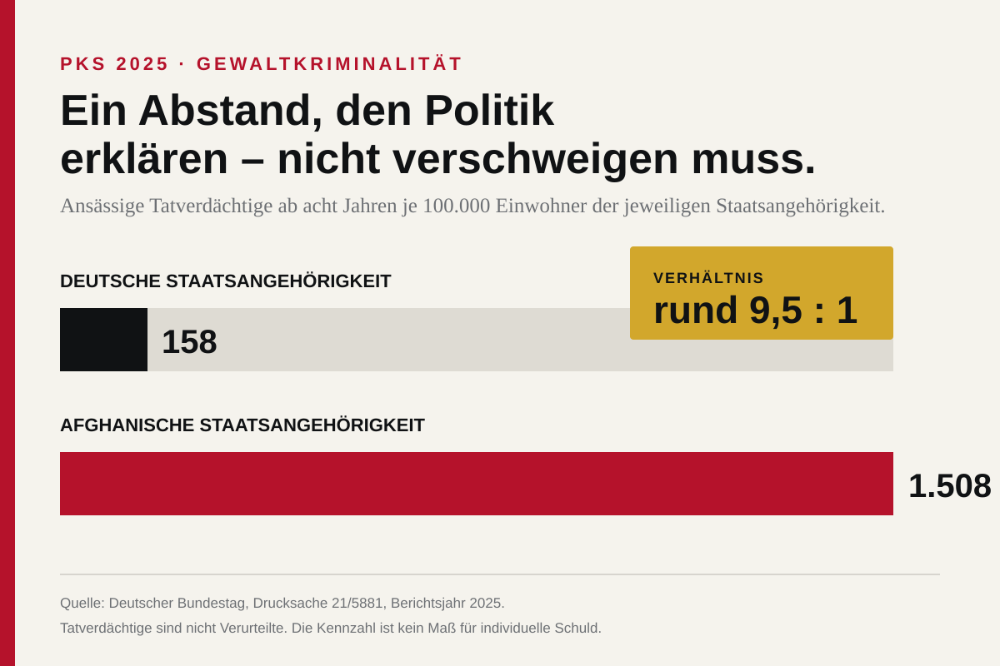

Der Weg war alltäglich. Ein 22-jähriger Student kam am Mittwochvormittag von einem Lebensmittelmarkt in Trier. Auf dem Fußweg der Robert-Schuman-Allee begegnete ihm ein gleichaltriger Mann. Nach dem bisherigen Ermittlungsstand kannten sie einander nicht. Die Polizei spricht von einer zufälligen Begegnung. Dann zog der andere ein Küchenmesser und stach mindestens zweimal in den Oberkörper des Studenten. Wiederbelebungsversuche blieben erfolglos.
Der dringend Tatverdächtige ist afghanischer Staatsangehöriger und lebt seit mehreren Jahren in Trier. Er wurde kurz nach der Tat festgenommen und räumte nach Mitteilung von Polizei und Staatsanwaltschaft ein, zugestochen zu haben. Zu einem Motiv gibt es bislang keine Erkenntnisse. Wegen Anhaltspunkten für eine psychische Erkrankung ordnete ein Ermittlungsrichter die vorläufige Unterbringung in einer geschlossenen forensischen Psychiatrie an. Ein Gutachten soll die Schuldfähigkeit klären. Das Verfahren läuft. Auch ein Geständnis ersetzt kein Urteil.
Diese Sorgfalt ist kein Rückzug. Sie ist die Voraussetzung eines harten Arguments. Wer einen Verdacht zur Gewissheit aufbläst, macht es den Beschwichtigern leicht. Wer dagegen sauber trennt zwischen Fall, Ermittlungsstand und Statistik, legt den politischen Kern frei: Der Staat schuldet seinen Bürgern Schutz im Alltag. Nicht nur an Flughäfen, nicht nur vor Großereignissen, sondern auf dem kurzen Weg vom Supermarkt nach Hause.
Ein Fall ist keine Quote
Es wäre unseriös, aus einem Tötungsdelikt die Kriminalität einer ganzen Bevölkerungsgruppe abzuleiten. Ebenso unseriös wäre es, amtliche Unterschiede zu verschweigen, sobald ein konkreter Fall die politische Debatte berührt. Die Polizeiliche Kriminalstatistik misst Tatverdächtige, nicht Verurteilte. Sie misst registrierte Kriminalität, nicht das Dunkelfeld. Und doch ist sie das umfassendste Instrument, das der Staat für die Lagebeschreibung besitzt.
Die neueste Sonderauswertung der Bundesregierung bezieht sich auf das Berichtsjahr 2025. Bei Gewaltkriminalität weist sie für deutsche Staatsangehörige 158 ansässige Tatverdächtige je 100.000 Einwohner ab acht Jahren aus. Für afghanische Staatsangehörige sind es 1.508. Das Verhältnis beträgt rund 9,5 zu eins. Bei Mord, Totschlag und Tötung auf Verlangen stehen 2 zu 25; bei Vergewaltigung, sexueller Nötigung und besonders schweren sexuellen Übergriffen 11 zu 138.

Das ist nicht die behauptete fünfzigfache Belastung, die in sozialen Netzwerken kursiert. Die amtliche Zahl ist niedriger. Sie ist dennoch so groß, dass niemand sie mit einem Achselzucken abtun kann. Eine konservative Zeitung darf eine falsche Zahl nicht übernehmen, nur weil sie zur eigenen Erwartung passt. Wer Kontrolle über die Grenze verlangt, muss zuerst Kontrolle über das eigene Argument haben.
Hinzu kommt eine methodische Grenze: Wer neben einer ausländischen auch die deutsche Staatsangehörigkeit besitzt, wird in der PKS als deutsch erfasst. Die Statistik erlaubt deshalb keine vollständige Auswertung nach Migrationsgeschichte. Daraus folgt aber nicht, dass jeder deutsche Tatverdächtige heimlich einer anderen Gruppe zuzurechnen sei. Es folgt nur, dass Staatsangehörigkeit und Herkunftsgeschichte verschiedene Merkmale sind und der Staat Doppelstaatler transparent als Untergruppe ausweisen sollte.
Erklären heißt nicht entschuldigen
Kriminalität hängt stark mit Alter und Geschlecht zusammen. Unter Schutzsuchenden sind junge Männer überproportional vertreten. Armut, Gewalterfahrungen, unsicherer Aufenthaltsstatus und psychische Belastungen können Risiken erhöhen. Die Bundesregierung nennt solche Faktoren selbst. Sie erklären einen Teil des Abstands. Sie heben ihn nicht auf. Ein Opfer hat nichts davon, wenn sein Tod im Nachhinein soziologisch richtig eingeordnet wurde.
Gerade der Trierer Fall zeigt, dass Migrationspolitik und Psychiatrie nicht gegeneinander ausgespielt werden dürfen. Wenn die bisherigen Angaben zutreffen, war der Beschuldigte vor Kurzem psychiatrisch in Behandlung. Dann stellt sich neben der Frage nach Einreise und Aufenthalt auch die Frage, ob eine erkennbare Gefahr rechtzeitig erfasst wurde. Ein handlungsfähiger Staat braucht funktionierende Ausländerbehörden, Polizei, Justiz und psychiatrische Versorgung. Kontrollverlust hat selten nur eine Behörde.
Die politische Verantwortung beginnt deshalb früher als am Tatort. Wer durfte einreisen? Wurde der Schutzgrund zügig geprüft? War die Identität geklärt? Gab es Vorfälle oder Gefährdungshinweise? Welche Behörde wusste was? Welche rechtlichen Möglichkeiten bestanden? Diese Fragen sind keine Vorverurteilung des Beschuldigten. Sie sind die Mindestanforderung an eine Regierung, die Schutz verspricht.
Was eine konservative Antwort leisten muss
Erstens braucht Deutschland schnelle Asylverfahren an einer kontrollierten Außengrenze und eine klare Trennung zwischen Schutz, Einwanderung und unerlaubtem Aufenthalt. Zweitens müssen ausländische Intensiv- und Gewalttäter nach rechtskräftiger Verurteilung konsequent abgeschoben werden, soweit Recht und tatsächliche Rückführung es erlauben. Drittens müssen Behörden Mehrfachstaatsangehörigkeiten, Aufenthaltsstatus und relevante Deliktsgruppen statistisch nachvollziehbar ausweisen. Transparenz schützt vor Gerüchten, weil sie die überprüfbare Zahl an die Stelle der Fantasiezahl setzt.
Viertens darf psychische Erkrankung weder als politisches Universalalibi noch als Schimpfwort dienen. Wer krank und gefährlich ist, braucht Behandlung in einem gesicherten Rahmen. Wer schuldfähig eine schwere Tat begeht, braucht Strafe. Welche Kategorie im Trierer Fall zutrifft, entscheidet das Gutachten und später das Gericht.
Und fünftens muss die Debatte den Täter als Täter und den Staat als Verantwortlichen benennen, ohne Millionen Menschen unter Generalverdacht zu stellen. Die stärkste Kritik richtet sich nicht gegen den unbescholtenen Afghanen, der arbeitet, lernt und seine Familie versorgt. Sie richtet sich gegen eine Politik, die jede Differenzierung „stigmatisierend“ nennt und dadurch das Vertrauen in jede Statistik zerstört.
Die Bundesregierung verweist zu Recht darauf, dass die Gewaltkriminalität 2025 um 2,3 Prozent sank. Im selben Bericht beträgt der Anteil nichtdeutscher Tatverdächtiger bei Gewaltkriminalität 42,9 Prozent. Beides stimmt. Seriöse Politik hält zwei Tatsachen gleichzeitig aus. Sie nutzt den Rückgang nicht als Beruhigungspille und die Überrepräsentation nicht als Freibrief für Pauschalurteile.
Der Student von Trier war kein Diagramm. Er war 22 Jahre alt und auf dem Heimweg. Sein Name ist bislang nicht öffentlich, sein Tod darf trotzdem nicht in der nächsten Nachrichtenlage verschwinden. Sicherheitspolitik beginnt mit einer schlichten moralischen Rangordnung: Das Recht des friedlichen Bürgers auf seinen Alltag wiegt schwerer als das Interesse der Politik, unangenehme Befunde kleinzureden.
Wer schützt den Alltag? In einem funktionierenden Staat lautet die Antwort: Polizei, Justiz, kontrollierte Grenzen, belastbare Behörden und eine Politik, die Tatsachen weder dramatisiert noch leugnet. In Deutschland ist diese Antwort zu oft ein Versprechen. Sie muss wieder eine Erfahrung werden.
Quellen
- Polizeipräsidium Trier und Staatsanwaltschaft Trier: Messerangriff auf einen 22-jährigen Studenten, 16. Juli 2026.
- Deutscher Bundestag: Drucksache 21/5881, Tatverdächtigenbelastungszahlen 2025, 8. Mai 2026.
- Bundesregierung: Polizeiliche Kriminalstatistik 2025, 20. April 2026.
- Deutscher Bundestag: Erfassung der Staatsangehörigkeit bei Mehrstaatlern, 4. Juli 2025.
Redaktionsstand: 19. Juli 2026. Für den Beschuldigten gilt die Unschuldsvermutung; Tatmotiv und Schuldfähigkeit sind Gegenstand laufender Ermittlungen.